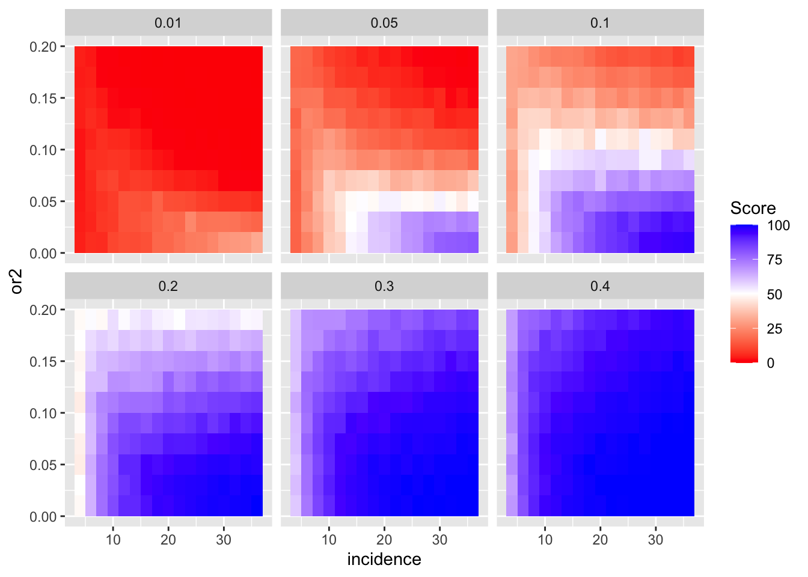
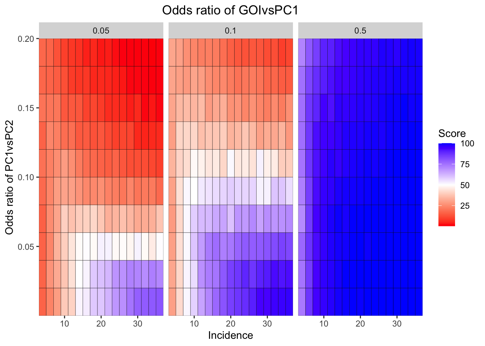
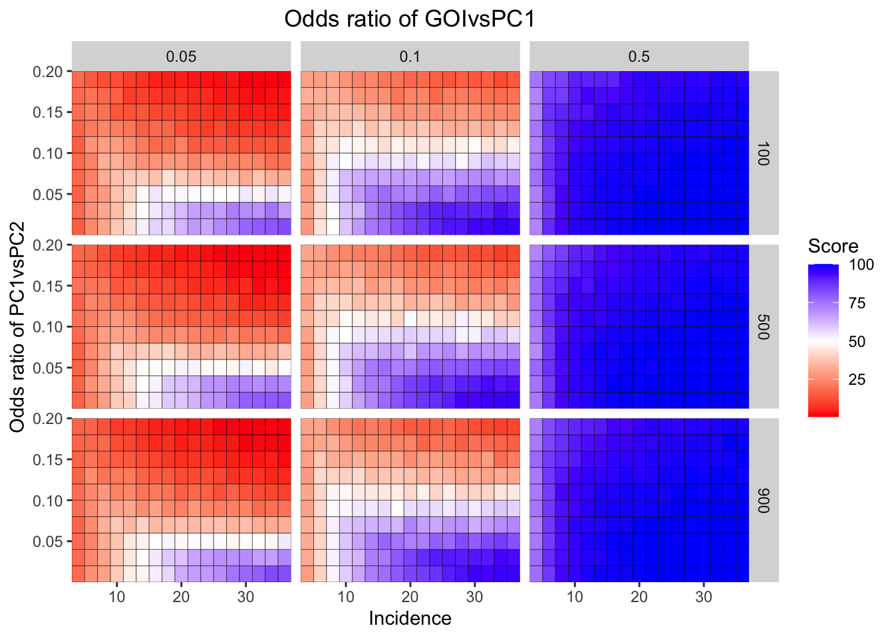
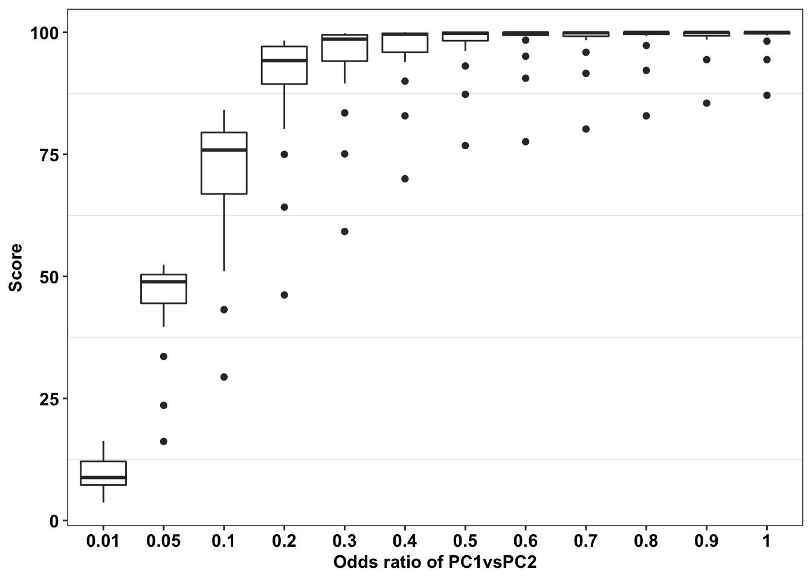
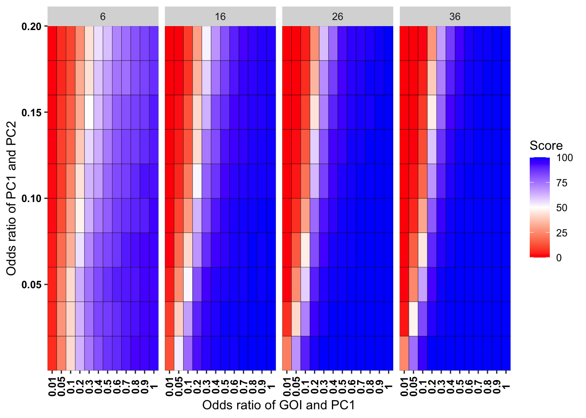
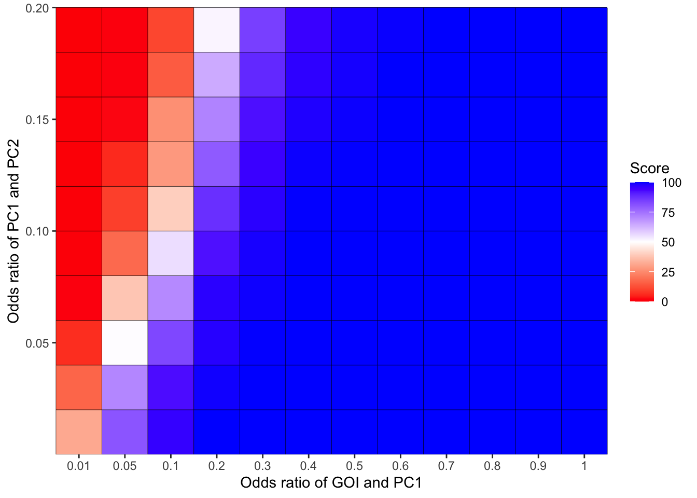
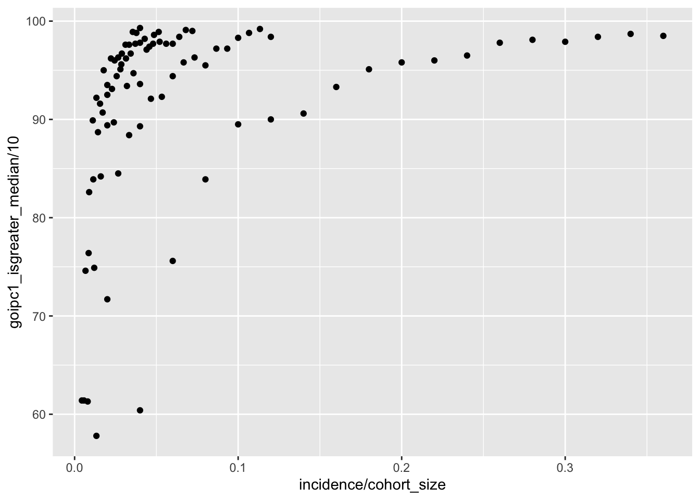
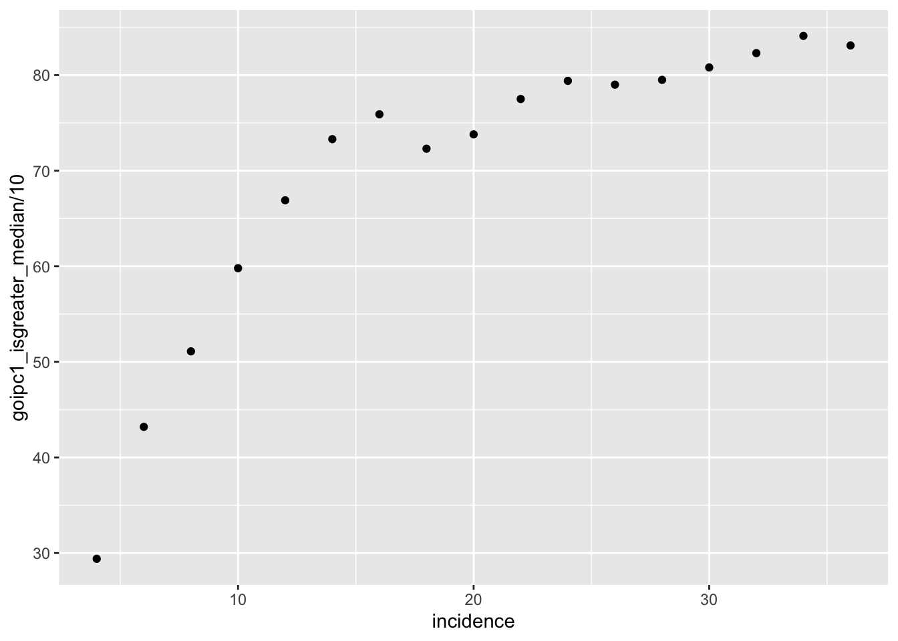
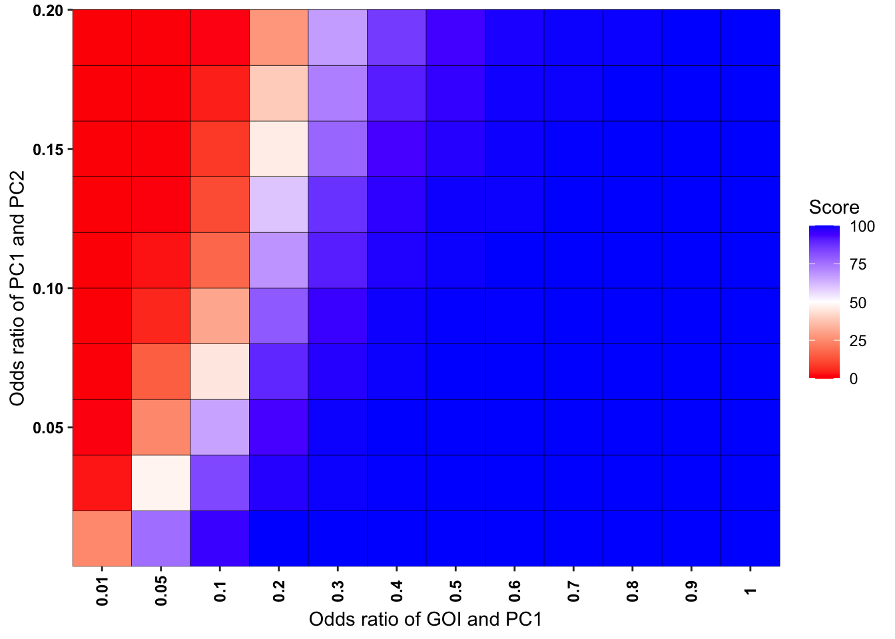
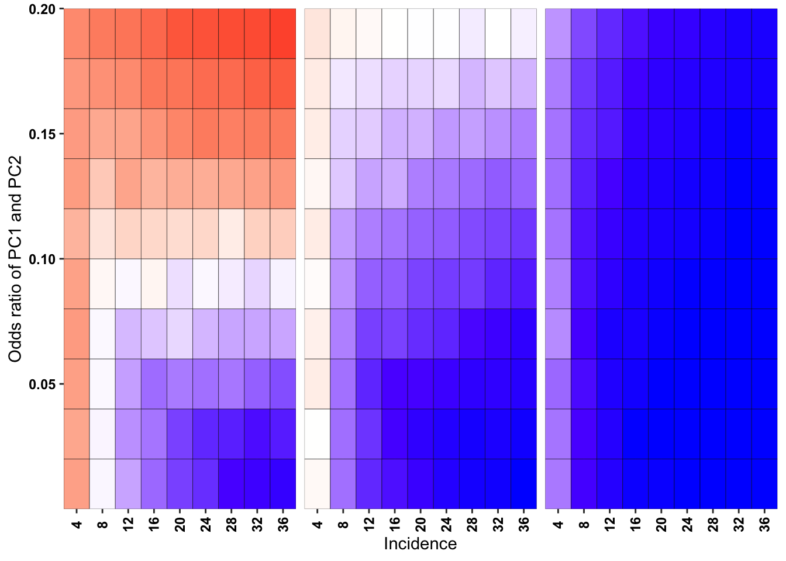

updated_resampling_strategy2
Haider Inam
5/30/2021
Last updated: 2021-10-21
Checks: 6 1
Knit directory: pair_con_select/
This reproducible R Markdown analysis was created with workflowr (version 1.6.2). The Checks tab describes the reproducibility checks that were applied when the results were created. The Past versions tab lists the development history.
The R Markdown file has unstaged changes. To know which version of the R Markdown file created these results, you’ll want to first commit it to the Git repo. If you’re still working on the analysis, you can ignore this warning. When you’re finished, you can run wflow_publish to commit the R Markdown file and build the HTML.
Great job! The global environment was empty. Objects defined in the global environment can affect the analysis in your R Markdown file in unknown ways. For reproduciblity it’s best to always run the code in an empty environment.
The command set.seed(20190211) was run prior to running the code in the R Markdown file. Setting a seed ensures that any results that rely on randomness, e.g. subsampling or permutations, are reproducible.
Great job! Recording the operating system, R version, and package versions is critical for reproducibility.
Nice! There were no cached chunks for this analysis, so you can be confident that you successfully produced the results during this run.
Great job! Using relative paths to the files within your workflowr project makes it easier to run your code on other machines.
Great! You are using Git for version control. Tracking code development and connecting the code version to the results is critical for reproducibility.
The results in this page were generated with repository version c511c2b. See the Past versions tab to see a history of the changes made to the R Markdown and HTML files.
Note that you need to be careful to ensure that all relevant files for the analysis have been committed to Git prior to generating the results (you can use wflow_publish or wflow_git_commit). workflowr only checks the R Markdown file, but you know if there are other scripts or data files that it depends on. Below is the status of the Git repository when the results were generated:
Ignored files:
Ignored: .DS_Store
Ignored: .Rproj.user/
Ignored: analysis/.DS_Store
Ignored: analysis/.Rproj.user/
Ignored: code/.DS_Store
Ignored: data/.DS_Store
Ignored: data/depmap_alkati/.DS_Store
Ignored: data/depmap_alkati/Data_Raw/.DS_Store
Ignored: data/depmap_alkati/Data_Raw/CCLE/CCLE_RNAseq_ExonUsageRatio_20180929.gct
Ignored: data/skmel28_sos1_mekq56p_vemurafenib.csv.sb-ea24b981-dvFz4V/
Ignored: data/tcga_brca_expression/
Ignored: data/tcga_luad_expression/
Ignored: data/tcga_skcm_expression/
Ignored: output/.DS_Store
Ignored: output/alkati_filtercutoff_allfilters.csv
Untracked files:
Untracked: analysis/Archive/
Untracked: analysis/alkati_subsampling_simulations_2.Rmd
Untracked: code/archive/
Untracked: code/contab_downsampler.R
Untracked: code/contab_simulator.R
Untracked: output/Plots/
Unstaged changes:
Deleted: analysis/alkati_cell_line_tae684_response.Rmd
Modified: analysis/alkati_subsampling_simulations.Rmd
Deleted: analysis/analysis.Rproj
Modified: analysis/index.Rmd
Deleted: analysis/pairwise_comparisons_conditional_selection_simulated_cohorts.Rmd
Deleted: analysis/score_heatmap_bestoption1_newmethod.pdf
Deleted: analysis/updated_resampling_strategy.Rmd
Modified: analysis/updated_resampling_strategy2.Rmd
Deleted: analysis/updated_resampling_strategy3.Rmd
Deleted: code/README.md
Deleted: code/mut_excl_genes_datapoints.R
Deleted: code/mut_excl_genes_generator3.R
Deleted: code/quadratic_solver.R
Deleted: code/shinyfunc.R
Deleted: code/simresults_generator.R
Deleted: output/alkati_ccle_tae684_plot.pdf
Deleted: output/alkati_luad_exonimbalance.pdf
Deleted: output/alkati_mtn_pval_fig2B.pdf
Deleted: output/alkati_skcm_exonimbalance.pdf
Deleted: output/alkati_subsamplesize_orval_fig1c.pdf
Deleted: output/alkati_subsamplesize_pval_fig.pdf
Deleted: output/alkati_subsamplesize_pval_fig1c.pdf
Deleted: output/baf3_alkati_figure_deltaadjusted_doublings.pdf
Deleted: output/baf3_alkati_figure_deltaadjusted_doublings_updated.pdf
Deleted: output/baf3_barplot.pdf
Deleted: output/baf3_elisa_barplot.pdf
Deleted: output/baf3_f1174_figure_deltaadjusted_doublings.pdf
Deleted: output/egfr_luad_exonimbalance.pdf
Deleted: output/fig1c_3719_4.pdf
Deleted: output/fig1c_52219.pdf
Deleted: output/fig2b2_filtercutoff_atinras_totalalk.pdf
Deleted: output/fig2b_filtercutoff_atibraf.pdf
Deleted: output/fig2b_filtercutoff_atinras.pdf
Deleted: output/melanoma_vemurafenib_fig.pdf
Deleted: output/melanoma_vemurafenib_fig_bottom.pdf
Deleted: output/melanoma_vemurafenib_fig_top.pdf
Deleted: output/suppfig1..pdf
Deleted: output/suppfig1_52219.pdf
Deleted: paircon_boxplot_alkati.pdf
Deleted: shinyapp/code/README.md
Deleted: shinyapp/code/alldata_compiler.R
Deleted: shinyapp/code/contab_maker.R
Deleted: shinyapp/code/mut_excl_genes_datapoints.R
Deleted: shinyapp/code/mut_excl_genes_generator.R
Deleted: shinyapp/code/quadratic_solver.R
Deleted: shinyapp/code/shinyfunc.R
Deleted: shinyapp/code/simresults_generator.R
Deleted: shinyapp/rsconnect/shinyapps.io/haider-inam/shinyapp.dcf
Deleted: shinyapp/server.R
Deleted: shinyapp/ui.r
Deleted: shinyapp/www/decision_tree.png
Deleted: shinyapp/www/decision_tree_transparent.png
Deleted: shinyapp/www/logo.png
Deleted: shinyapp/www/logo2.png
Deleted: shinyapp/www/logo3.png
Deleted: shinyapp/www/logo4.png
Note that any generated files, e.g. HTML, png, CSS, etc., are not included in this status report because it is ok for generated content to have uncommitted changes.
These are the previous versions of the repository in which changes were made to the R Markdown (analysis/updated_resampling_strategy2.Rmd) and HTML (docs/updated_resampling_strategy2.html) files. If you’ve configured a remote Git repository (see ?wflow_git_remote), click on the hyperlinks in the table below to view the files as they were in that past version.
| File | Version | Author | Date | Message |
|---|---|---|---|---|
| Rmd | c511c2b | haiderinam | 2021-10-20 | October 2021 Update |
| html | 755195f | haiderinam | 2021-10-20 | October 2021 Update |
| html | 566d414 | haiderinam | 2021-06-19 | Build site. |
| Rmd | 3155461 | haiderinam | 2021-06-19 | updated method for pairwise comparisons |
| Rmd | 8520286 | haiderinam | 2021-06-14 | Updated website contents on 061421 |
| Rmd | 58c60f1 | haiderinam | 2021-06-10 | 061021 Updates |
# library(ensembldb) #Loading this with Dplyr commands seems to throw an error in Rmd
# library(EnsDb.Hsapiens.v86) #Loading this with Dplyr commands seems to throw an error in Rmd
# source("../code/mut_excl_genes_generator3.R")
# source("../code/mut_excl_genes_datapoints.R")
source("code/contab_maker.R")
source("code/contab_simulator.R")
source("code/contab_downsampler.R")
source("code/alldata_compiler.R")
source("code/mut_excl_genes_generator.R")
# source("../code/contab_maker.R")
# source("../code/contab_simulator.R")
# source("../code/contab_downsampler.R")
# source("../code/alldata_compiler.R")
# source("../code/mut_excl_genes_generator.R")# source("code/mut_excl_genes_generator.R")
# source("code/archive/mut_excl_genes_generator3.R")
# source("code/archive/mut_excl_genes_generator_old.R")
# mut_excl_genes_generator(100,12,.01,.1)
# mut_excl_genes_generator(100,12,.1,.01)Pairwise Comparisons using Simulated Genes
This is the part of the code where I performed pairwise comparisons on gene pairs having different abundances, odds ratios, and cohort sizes.
# rm(list=ls())
or_pair1=c(.01,.05,.1,.2,.3,.4,.5,.6,.7,.8,.9,1)
or_pair2=seq(.01,.2,by=.02)
incidence=seq(4,36,by=2)
cohort_size=seq(100,1000,by=200)
# or_pair1=c(.01,.05)
# or_pair2=seq(.01,.1,by=.05)
# incidence=seq(4,36,by=20)
# cohort_size=seq(100,1000,by=400)
# or_pair1=.05
# or_pair2=.01
# incidence=12
# cohort_size=500
# i=1
# j=1
# k=1
# l=1
true_or_vals=or_pair1
cohort_size_vals=cohort_size
gene1_total_vals=incidence
simresults_compiled_alldata=as.list(length(or_pair2)*length(or_pair1)*length(incidence)*length(cohort_size))
simresults_compiled=matrix(,length(or_pair2)*length(or_pair1)*length(incidence)*length(cohort_size),ncol=16)
ct=1
for(j in 1:length(incidence)){
tic()
for(l in 1:length(or_pair2)){
for(k in 1:length(cohort_size_vals)){
for(i in 1:length(true_or_vals)){
gene_pair_1=unlist(mut_excl_genes_generator(cohort_size[k],incidence[j],or_pair1[i],or_pair2[l])[1])
gene_pair_1_table=rbind(c(gene_pair_1[1],gene_pair_1[2]),c(gene_pair_1[3],gene_pair_1[4])) ###make sure these are the right indices
gene_pair_2=unlist(mut_excl_genes_generator(cohort_size[k],incidence[j],or_pair1[i],or_pair2[l])[2])
gene_pair_2_table=rbind(c(gene_pair_2[1],gene_pair_2[2]),c(gene_pair_2[3],gene_pair_2[4]))
# alldata_1=mut_excl_genes_datapoints(gene_pair_1)
#
# alldata_2=mut_excl_genes_datapoints(gene_pair_2)
# alldata_comp_1=alldata_compiler(alldata_1,"gene2","gene3","gene1",'N',"N/A","N/A")[[2]]
#
# genex_replication_prop_1=alldata_compiler(alldata_1,"gene2","gene3","gene1",'N',"N/A","N/A")[[1]]
# alldata_comp_2=alldata_compiler(alldata_2,"gene2","gene3","gene1",'N',"N/A","N/A")[[2]]
# genex_replication_prop_2=alldata_compiler(alldata_2,"gene2","gene3","gene1",'N',"N/A","N/A")[[1]]
###Calculating Odds ratios and GOI frequencies for the raw data###
# cohort_size_curr=length(alldata_comp$Positive_Ctrl1)
cohort_size_curr=cohort_size[k]
# pc1pc2_contab_counts=contab_maker(alldata_comp$Positive_Ctrl1,alldata_comp$Positive_Ctrl2,alldata_comp)[2:1, 2:1]
pc1pc2_contab_counts=gene_pair_2_table
# goipc1_contab_counts=contab_maker(alldata_comp$genex,alldata_comp$Positive_Ctrl1,alldata_comp)[2:1, 2:1]
goipc1_contab_counts=gene_pair_1_table
# goipc2_contab_counts=contab_maker(alldata_comp$genex,alldata_comp$Positive_Ctrl2,alldata_comp)[2:1, 2:1]
# pc1pc2_contab_probabilities=pc1pc2_contab_counts/cohort_size_curr
# goipc1_contab_probabilities=goipc1_contab_counts/cohort_size_curr
pc1pc2_contab_probabilities=pc1pc2_contab_counts
goipc1_contab_probabilities=goipc1_contab_counts
# goipc2_contab_probabilities=goipc2_contab_counts/cohort_size
or_pc1pc2=pc1pc2_contab_probabilities[1,1]*pc1pc2_contab_probabilities[2,2]/(pc1pc2_contab_probabilities[1,2]*pc1pc2_contab_probabilities[2,1])
or_goipc1=goipc1_contab_probabilities[1,1]*goipc1_contab_probabilities[2,2]/(goipc1_contab_probabilities[1,2]*goipc1_contab_probabilities[2,1])
# or_goipc2=goipc2_contab_probabilities[1,1]*goipc2_contab_probabilities[2,2]/(goipc2_contab_probabilities[1,2]*goipc2_contab_probabilities[2,1])
goi_freq=goipc1_contab_probabilities[1,1]+goipc1_contab_probabilities[1,2]
# goi_freq=.01
# class(goi_freq)
###
###Downsampling PC1 to the probability of GOI without changing ORs###
###The function below converts contingency table data to a new contingency table in which the data is downsampled to the desired frequency, aka the frequency of the GOI in this case###
pc1new_pc2_contab=contab_downsampler(pc1pc2_contab_probabilities,goi_freq)
goinew_pc1_contab=contab_downsampler(goipc1_contab_probabilities,goi_freq)
# goinew_pc2_contab=contab_downsampler(goipc2_contab_probabilities,goi_freq)
###original contab:
# head(pc1pc2_contab_probabilities)
###downsampled contab:
# head(pc1new_pc2_contab)
pc1rawpc2_contabs_sims=contab_simulator(pc1pc2_contab_probabilities,1000,cohort_size_curr)
pc1pc2_contabs_sims=contab_simulator(pc1new_pc2_contab,1000,cohort_size_curr)
goipc1_contabs_sims=contab_simulator(goinew_pc1_contab,1000,cohort_size_curr)
# goipc2_contabs_sims=contab_simulator(goinew_pc2_contab,1000,cohort_size)
# head(pc1pc2_contabs_sims) #each row in this dataset is a new contab
pc1rawpc2_contabs_sims=data.frame(pc1rawpc2_contabs_sims)
pc1rawpc2_contabs_sims=pc1rawpc2_contabs_sims%>%
mutate(or=p11*p00/(p10*p01))
pc1pc2_contabs_sims=data.frame(pc1pc2_contabs_sims)
pc1pc2_contabs_sims=pc1pc2_contabs_sims%>%
mutate(or=p11*p00/(p10*p01))
goipc1_contabs_sims=data.frame(goipc1_contabs_sims)
goipc1_contabs_sims=goipc1_contabs_sims%>%
mutate(or=p11*p00/(p10*p01))
# goipc2_contabs_sims=data.frame(goipc2_contabs_sims)
# goipc2_contabs_sims=goipc2_contabs_sims%>%
# mutate(or=p11*p00/(p10*p01))
pc1rawpc2_contabs_sims$comparison="pc1rawpc2"
pc1pc2_contabs_sims$comparison="pc1pc2"
goipc1_contabs_sims$comparison="goipc1"
# goipc2_contabs_sims$comparison="goipc2"
or_median_raw=quantile(pc1rawpc2_contabs_sims$or,na.rm = T)[3]
or_uq_raw=quantile(pc1rawpc2_contabs_sims$or,na.rm = T)[4]
or_median_downsampled=quantile(pc1pc2_contabs_sims$or,na.rm = T)[3]
or_uq_downsampled=quantile(pc1pc2_contabs_sims$or,na.rm = T)[4]
pc1rawpc2_contabs_sims=pc1rawpc2_contabs_sims%>%
mutate(isgreater_raw_median=case_when(or>=or_median_raw~1,
TRUE~0),
isgreater_raw_uq=case_when(or>or_uq_raw~1,
TRUE~0),
isgreater_median=case_when(or>or_median_downsampled~1,
TRUE~0),
isgreater_uq=case_when(or>or_uq_downsampled~1,
TRUE~0)
)
pc1pc2_contabs_sims=pc1pc2_contabs_sims%>%
mutate(isgreater_raw_median=case_when(or>=or_median_raw~1,
TRUE~0),
isgreater_raw_uq=case_when(or>or_uq_raw~1,
TRUE~0),
isgreater_median=case_when(or>or_median_downsampled~1,
TRUE~0),
isgreater_uq=case_when(or>or_uq_downsampled~1,
TRUE~0)
)
goipc1_contabs_sims=goipc1_contabs_sims%>%
mutate(isgreater_raw_median=case_when(or>or_median_raw~1,
TRUE~0),
isgreater_raw_uq=case_when(or>or_uq_raw~1,
TRUE~0),
isgreater_median=case_when(or>or_median_downsampled~1,
TRUE~0),
isgreater_uq=case_when(or>or_uq_downsampled~1,
TRUE~0)
)
# pc1pc2_contabs_sims=pc1pc2_contabs_sims%>%
# mutate(isgreater=case_when(or>=or_pc1pc2~1,
# TRUE~0))
# goipc1_contabs_sims=goipc1_contabs_sims%>%
# mutate(isgreater=case_when(or>=or_pc1pc2~1,
# TRUE~0))
# goipc2_contabs_sims=goipc2_contabs_sims%>%
# mutate(isgreater=case_when(or>=or_pc1pc2~1,
# TRUE~0))
pc1rawpc2_isgreater_raw_median=sum(pc1rawpc2_contabs_sims$isgreater_raw_median)
pc1rawpc2_isgreater_raw_uq=sum(pc1rawpc2_contabs_sims$isgreater_raw_uq)
pc1rawpc2_isgreater_median=sum(pc1rawpc2_contabs_sims$isgreater_median)
pc1rawpc2_isgreater_uq=sum(pc1rawpc2_contabs_sims$isgreater_uq)
pc1pc2_isgreater_raw_median=sum(pc1pc2_contabs_sims$isgreater_raw_median)
pc1pc2_isgreater_raw_uq=sum(pc1pc2_contabs_sims$isgreater_raw_uq)
pc1pc2_isgreater_median=sum(pc1pc2_contabs_sims$isgreater_median)
pc1pc2_isgreater_uq=sum(pc1pc2_contabs_sims$isgreater_uq)
goipc1_isgreater_raw_median=sum(goipc1_contabs_sims$isgreater_raw_median)
goipc1_isgreater_raw_uq=sum(goipc1_contabs_sims$isgreater_raw_uq)
goipc1_isgreater_median=sum(goipc1_contabs_sims$isgreater_median)
goipc1_isgreater_uq=sum(goipc1_contabs_sims$isgreater_uq)
# pc1rawpc2_isgreater=sum(pc1rawpc2_contabs_sims$isgreater)
# pc1pc2_isgreater=sum(pc1pc2_contabs_sims$isgreater)
# goipc1_isgreater=sum(goipc1_contabs_sims$isgreater)
simresults=c(cohort_size[k],
incidence[j],
or_pair1[i],
or_pair2[l],
pc1rawpc2_isgreater_raw_median,
pc1rawpc2_isgreater_raw_uq,
pc1rawpc2_isgreater_median,
pc1rawpc2_isgreater_uq,
pc1pc2_isgreater_raw_median,
pc1pc2_isgreater_raw_uq,
pc1pc2_isgreater_median,
pc1pc2_isgreater_uq,
goipc1_isgreater_raw_median,
goipc1_isgreater_raw_uq,
goipc1_isgreater_median,
goipc1_isgreater_uq)
simresults_alldata=c(cohort_size[k],
incidence[j],
or_pair1[i],
or_pair2[l],
list(goipc1_contabs_sims$or),
list(pc1pc2_contabs_sims$or))
######Comment out the following section if you wish to not gather all the 1,000 Odds ratios for each simulation####
simresults_compiled_alldata[[ct]]=simresults_alldata
# a=simresults_compiled_alldata[[1]]
simresults_compiled[ct,]=simresults
ct=ct+1
}
}
}
toc()
}12.638 sec elapsed
11.421 sec elapsed
11.695 sec elapsed
10.866 sec elapsed
11.252 sec elapsed
10.53 sec elapsed
9.907 sec elapsed
10.585 sec elapsed
9.836 sec elapsed
9.816 sec elapsed
9.917 sec elapsed
9.732 sec elapsed
10.903 sec elapsed
12.814 sec elapsed
11.109 sec elapsed
10.437 sec elapsed
9.921 sec elapsedsimresults_compiled=data.frame(simresults_compiled)
colnames(simresults_compiled)=c("cohort_size",
"incidence",
"or1",
"or2",
"pc1rawpc2_isgreater_raw_median",
"pc1rawpc2_isgreater_raw_uq",
"pc1rawpc2_isgreater_median",
"pc1rawpc2_isgreater_uq",
"pc1pc2_isgreater_raw_median",
"pc1pc2_isgreater_raw_uq",
"pc1pc2_isgreater_median",
"pc1pc2_isgreater_uq",
"goipc1_isgreater_raw_median",
"goipc1_isgreater_raw_uq",
"goipc1_isgreater_median",
"goipc1_isgreater_uq")
simresults_compiled$delta_median=simresults_compiled$goipc1_isgreater_raw_median-simresults_compiled$goipc1_isgreater_median
simresults_compiled$delta_uq=simresults_compiled$goipc1_isgreater_raw_uq-simresults_compiled$goipc1_isgreater_uq
simresults_compiled=simresults_compiled%>%
mutate(fp_corrected_95=case_when(
goipc1_isgreater_raw_uq<950~-1,
(goipc1_isgreater_raw_uq>=950&(goipc1_isgreater_raw_uq-delta_uq)<=950)~1,
TRUE~0),
fp_corrected_99=case_when(
goipc1_isgreater_raw_uq<990~-1,
(goipc1_isgreater_raw_uq>=990&(goipc1_isgreater_raw_uq-delta_uq)<=990)~1,
TRUE~0))
# simresults_compiled$goipc1_isgreater_percent=simresults_compiled$goipc1_isgreater*100/1000
simresults_subset=simresults_compiled%>%filter(cohort_size%in%500)Here I am plotting the score obtained for all simulations. The score is defined as the percentage of GOI vs PC1 trials that fall in the median of the odds ratios of the frequency corrected PC1 vs PC2 simulations.
ggplot(simresults_compiled%>%filter(or1<=.4),aes(x=incidence,y=or2))+geom_tile(aes(fill=goipc1_isgreater_median/10))+facet_grid(cohort_size~or1)+scale_fill_gradient2(low ="red" ,mid ="white",midpoint=50,high ="blue",name="Score")
Here I am plotting the score obtained for all simulations. The score is defined as the percentage of GOI vs PC1 trials that fall in the upper quartile of the odds ratios of the frequency corrected PC1 vs PC2 simulations. i.e. it is a less stringent test
ggplot(simresults_compiled%>%filter(or1<=.4),aes(x=incidence,y=or2))+geom_tile(aes(fill=goipc1_isgreater_uq/10))+facet_grid(cohort_size~or1)+scale_fill_gradient2(low ="red" ,mid ="white",midpoint=50,high ="blue",name="Percent succesful trials")
A few more ways to look at the plots above:
ggplot(simresults_compiled%>%filter(or1<=.4,cohort_size%in%500),aes(x=incidence,y=or2))+geom_tile(aes(fill=goipc1_isgreater_median/10))+facet_wrap(~or1)+scale_fill_gradient2(low ="red" ,mid ="white",midpoint=50,high ="blue",name="Score")
ggplot(simresults_compiled%>%filter(or1<=.4,cohort_size%in%500),aes(x=incidence,y=or2))+geom_tile(aes(fill=goipc1_isgreater_median/10))+facet_wrap(~or1,ncol=6)+scale_fill_gradient2(low ="red" ,mid ="white",midpoint=50,high ="blue",name="Score")ggplot(simresults_compiled%>%filter(or1%in%c(.05,0.1,.5),cohort_size%in%500),aes(x=incidence,y=or2))+geom_tile(color="black",aes(fill=goipc1_isgreater_median/10))+facet_wrap(~or1,ncol=6)+scale_fill_gradient2(low ="red" ,mid ="white",midpoint=50,high ="blue",name="Score")+scale_x_continuous(expand = c(0,0),name="Incidence")+
scale_y_continuous(expand = c(0,0),name="Odds ratio of PC1vsPC2")+ggtitle("Odds ratio of GOIvsPC1")+
theme(plot.title = element_text(hjust = 0.5))
# ggsave("score_heatmap.pdf",width=8,heigh=3,units="in",useDingbats=F)
ggplot(simresults_compiled%>%filter(or1%in%c(.05,0.1,.5),cohort_size%in%c(100,500,900)),aes(x=incidence,y=or2))+geom_tile(color="black",aes(fill=goipc1_isgreater_median/10))+facet_grid(cohort_size~or1)+scale_fill_gradient2(low ="red" ,mid ="white",midpoint=50,high ="blue",name="Score")+scale_x_continuous(expand = c(0,0),name="Incidence")+
scale_y_continuous(expand = c(0,0),name="Odds ratio of PC1vsPC2")+ggtitle("Odds ratio of GOIvsPC1")+
theme(plot.title = element_text(hjust = 0.5))
# ggsave("score_heatmap_supplement.pdf",width=8,heigh=7,units="in",useDingbats=F)
ggplot(simresults_compiled%>%filter(or2%in%.05,cohort_size%in%c(500)),aes(x=factor(or1),y=goipc1_isgreater_median/10))+geom_boxplot()+scale_x_discrete(name="Odds ratio of PC1vsPC2")+
scale_y_continuous(name="Score")+
theme(plot.title = element_text(hjust = 0.5))+cleanup
# ggsave("score_plot.pdf",width=8,heigh=3,units="in",useDingbats=F)
ggplot(simresults_compiled%>%filter(incidence%in%c(6,16,26,36),cohort_size%in%c(100,300,500,900)),aes(x=factor(or1),y=or2))+geom_tile(color="black",aes(fill=goipc1_isgreater_uq/10))+scale_fill_gradient2(low ="red" ,mid ="white",midpoint=50,high ="blue",name="Score")+scale_x_discrete(expand = c(0,0),name="Odds ratio of GOI and PC1")+facet_grid(cohort_size~incidence)+
scale_y_continuous(expand = c(0,0),name="Odds ratio of PC1 and PC2")+theme(plot.title = element_text(hjust = 0.5))ggplot(simresults_compiled%>%filter(incidence%in%c(6,16,26,36),cohort_size%in%500),aes(x=factor(or1),y=or2))+geom_tile(color="black",aes(fill=goipc1_isgreater_uq/10))+scale_fill_gradient2(low ="red" ,mid ="white",midpoint=50,high ="blue",name="Score")+scale_x_discrete(expand = c(0,0),name="Odds ratio of GOI and PC1")+facet_wrap(~incidence,ncol=4)+
scale_y_continuous(expand = c(0,0),name="Odds ratio of PC1 and PC2")+theme(plot.title = element_text(hjust = 0.5),axis.text.x=element_text(angle=90,hjust=.5,vjust=.5),axis.text=element_text(face="bold",size="9",color="black"))
# ggsave("score_heatmap_bestoption1.pdf",width=8,heigh=2.5,units="in",useDingbats=F)
# sort(unique(simresults_compiled$or2))
ggplot(simresults_compiled%>%filter(cohort_size%in%500),aes(x=factor(or1),y=or2))+geom_tile(color="black",aes(fill=goipc1_isgreater_median/10))+scale_fill_gradient2(low ="red" ,mid ="white",midpoint=50,high ="blue",name="Score")+scale_x_discrete(expand = c(0,0),name="Odds ratio of GOI and PC1")+
scale_y_continuous(expand = c(0,0),name="Odds ratio of PC1 and PC2")+theme(plot.title = element_text(hjust = 0.5))
# ggsave("score_heatmap_bestoption.pdf",width=4,heigh=3,units="in",useDingbats=F)
ggplot(simresults_compiled%>%filter(or1%in%.3,or2%in%.09),aes(x=incidence/cohort_size,y=goipc1_isgreater_median/10))+geom_point()
ggplot(simresults_compiled%>%filter(or1%in%.1,or2%in%.05,cohort_size%in%500),aes(x=incidence,y=goipc1_isgreater_median/10))+geom_point()
# scale_fill_gradient2(low ="red" ,mid ="white",midpoint=50,high ="blue",name="Score")+scale_x_discrete(expand = c(0,0),name="Odds ratio of GOI and PC1")+
# scale_y_continuous(expand = c(0,0),name="Odds ratio of PC1 and PC2")+theme(plot.title = element_text(hjust = 0.5))
# or1%in%c(.05,0.1,.5),cohort_size%in%c(100,500,900)
ggplot(simresults_compiled%>%filter(cohort_size%in%c(100,300,500)),aes(x=incidence,y=or2))+geom_tile(color="black",aes(fill=goipc1_isgreater_median/10))+facet_grid(cohort_size~or1)+scale_fill_gradient2(low ="red" ,mid ="white",midpoint=50,high ="blue",name="Score")+scale_x_continuous(expand = c(0,0),name="Incidence")+
scale_y_continuous(expand = c(0,0),name="Odds ratio of PC1vsPC2")+ggtitle("Odds ratio of GOIvsPC1")+
theme(plot.title = element_text(hjust = 0.5))
Here, I am looking at whether frequency correction of the positive control genes is in fact a more fair test of a comparison with gene of interest than no frequency correction. i.e. does it matter if the positive control genes are downsampled to the frequency of the gene of interest? Answer: yes. If the positive control genes were present at a lower frequency, it would be tougher to tell PC1 vs PC2 apart from GOI vs PC1.
ggplot(simresults_compiled%>%filter(or1<=.7,or1>=.2),aes(x=incidence,y=or2))+geom_tile(color="black",aes(fill=fp_corrected_95))+facet_grid(cohort_size~or1)+scale_fill_gradient2(low ="red" ,mid ="white",high ="blue",name="Regions where downsampling helps")
ggplot(simresults_compiled%>%filter(or1<=.7,or1>=.2),aes(x=incidence,y=or2))+geom_tile(color="black",aes(fill=fp_corrected_99))+facet_grid(cohort_size~or1)+scale_fill_gradient2(low ="red" ,mid ="white",high ="blue",name="Regions where downsampling helps")
Choosing plots for putting in paper
ggplot(simresults_compiled%>%filter(cohort_size%in%500),aes(x=factor(or1),y=or2))+geom_tile(color="black",aes(fill=goipc1_isgreater_uq/10))+scale_fill_gradient2(low ="red" ,mid ="white",midpoint=50,high ="blue",name="Score")+scale_x_discrete(expand = c(0,0),name="Odds ratio of GOI and PC1")+
scale_y_continuous(expand = c(0,0),name="Odds ratio of PC1 and PC2")+theme(plot.title = element_text(hjust = 0.5))+theme(plot.title = element_text(hjust = 0.5),axis.text.x=element_text(angle=90,hjust=.5,vjust=.5),axis.text=element_text(face="bold",size="9",color="black"))
# ggsave("score_heatmap_bestoption.pdf",width=4,heigh=3,units="in",useDingbats=F)
ggplot(simresults_compiled%>%filter(or1%in%c(.05,.3,.6),incidence%in%c(4,8,12,16,20,24,28,32,36),cohort_size%in%500),aes(x=factor(incidence),y=or2))+geom_tile(color="black",aes(fill=goipc1_isgreater_median/10))+facet_wrap(~or1,ncol=6)+scale_fill_gradient2(low ="red" ,mid ="white",midpoint=50,high ="blue",name="Score")+scale_x_discrete(expand = c(0,0),name="Incidence")+
scale_y_continuous(expand = c(0,0),name="Odds ratio of PC1 and PC2")+theme(strip.text=element_blank(),plot.title = element_text(hjust = 0.5),axis.text.x=element_text(angle=90,hjust=.5,vjust=.5),axis.text=element_text(face="bold",size="9",color="black"),legend.position = "none")
# ggsave("score_heatmap_bestoption1.pdf",width=6,heigh=2.5,units="in",useDingbats=F)
ggplot(simresults_compiled%>%filter(or1%in%c(.1,.2,.5),incidence%in%c(4,8,12,16,20,24,28,32,36),cohort_size%in%500),aes(x=factor(incidence),y=or2))+geom_tile(color="black",aes(fill=goipc1_isgreater_raw_median/10))+facet_wrap(~or1,ncol=6)+scale_fill_gradient2(low ="red" ,mid ="white",midpoint=50,high ="blue",name="Score")+scale_x_discrete(expand = c(0,0),name="Incidence")+
scale_y_continuous(expand = c(0,0),name="Odds ratio of PC1 and PC2")+theme(strip.text=element_blank(),plot.title = element_text(hjust = 0.5),axis.text.x=element_text(angle=90,hjust=.5,vjust=.5),axis.text=element_text(face="bold",size="9",color="black"),legend.position = "none")
# ggsave("score_heatmap_bestoption1.pdf",width=6,heigh=2.5,units="in",useDingbats=F)
ggplot(simresults_compiled%>%filter(cohort_size%in%500,incidence%in%c(4,8,12,16,20,24,28,32,36)),aes(x=factor(incidence),y=or2))+geom_tile(color="black",aes(fill=goipc1_isgreater_raw_median/10))+facet_wrap(~or1,ncol=4)+scale_fill_gradient2(low ="red" ,mid ="white",midpoint=50,high ="blue",name="Score")+scale_x_discrete(expand = c(0,0),name="Incidence")+
scale_y_continuous(expand = c(0,0),name="Odds ratio of PC1 and PC2")+theme(plot.title = element_text(hjust = 0.5),axis.text.x=element_text(angle=90,hjust=.5,vjust=.5),axis.text=element_text(face="bold",size="9",color="black"),legend.position = "none")
# ggsave("score_heatmap_bestoption1_supplement.pdf",width=6,heigh=6,units="in",useDingbats=F)
ggplot(simresults_compiled%>%filter(or1%in%c(.05,.1,.5),cohort_size%in%c(100,300,500)),aes(x=incidence,y=or2))+geom_tile(color="black",aes(fill=goipc1_isgreater_median/10))+facet_grid(cohort_size~or1)+scale_fill_gradient2(low ="red" ,mid ="white",midpoint=50,high ="blue",name="Score")+scale_x_discrete(expand = c(0,0),name="Incidence")+
scale_y_continuous(expand = c(0,0),name="Odds ratio of PC1 and PC2")
# a=simresults_compiled%>%filter(cohort_size%in%500,or1%in%.7,or2%in%.05,incidence%in%)# simresults_subset=simresults_compiled%>%filter(or2%in%0.01,or1%in%c(0.01,.1,1))
simresults_subset=unlist(simresults_compiled_alldata)
simresults_unlisted=data.frame(unlist(lapply(simresults_compiled_alldata,'[[',1)),
unlist(lapply(simresults_compiled_alldata,'[[',2)),
unlist(lapply(simresults_compiled_alldata,'[[',3)),
unlist(lapply(simresults_compiled_alldata,'[[',4)))
simresults_unlisted$list1=(lapply(simresults_compiled_alldata,'[[',5))
simresults_unlisted$list2=(lapply(simresults_compiled_alldata,'[[',6))
colnames(simresults_unlisted)=c("cohort_size","incidence","or1","or2","or1_list","or2_list")
simresults_unlisted=simresults_unlisted%>%filter(or2%in%0.01,or1%in%c(0.05,.1,1),cohort_size%in%500,incidence%in%c(4,8,12,16,20))
# library(reshape2)
a=simresults_unlisted%>%filter(incidence%in%8,or2%in%0.01,or1%in%.05)
# b=unnest(a)
median(b$or2_list)>median(b$or1_list)
# library(tidyr)
simresults_melted=unnest(simresults_unlisted)
simresults_melted2=melt(simresults_melted,
id.vars = c("cohort_size","or1","or2","incidence"),
measure.vars =c("or1_list","or2_list"),
variable.name = "Comparison",
value.name = "OR"
)
ggplot(simresults_melted2,aes(x=factor(incidence),y=OR,fill=Comparison))+facet_wrap(~or1)+geom_boxplot()+scale_y_continuous(trans="log2")+cleanup
plotly=ggplot(simresults_melted2,aes(x=factor(incidence),y=OR,fill=Comparison))+facet_wrap(~or1)+geom_boxplot()+cleanup
ggplotly(plotly)
simresults_unlisted=data.frame(unlist(lapply(simresults_compiled_alldata,'[[',1)),
unlist(lapply(simresults_compiled_alldata,'[[',2)),
unlist(lapply(simresults_compiled_alldata,'[[',3)),
unlist(lapply(simresults_compiled_alldata,'[[',4)))
simresults_unlisted$list1=(lapply(simresults_compiled_alldata,'[[',5))
simresults_unlisted$list2=(lapply(simresults_compiled_alldata,'[[',6))
colnames(simresults_unlisted)=c("cohort_size","incidence","or1","or2","or1_list","or2_list")
simresults_unlisted=simresults_unlisted%>%filter(or1%in%.5,or2%in%c(0.05,.11,.19),cohort_size%in%500,incidence%in%c(4,8,12,16,20))
simresults_melted=unnest(simresults_unlisted)
simresults_melted2=melt(simresults_melted,
id.vars = c("cohort_size","or1","or2","incidence"),
measure.vars =c("or1_list","or2_list"),
variable.name = "Comparison",
value.name = "OR"
)
ggplot(simresults_melted2,aes(x=factor(incidence),y=OR,fill=Comparison))+facet_wrap(~or2)+geom_boxplot()+scale_y_continuous(trans="log2")+cleanup
plotly=ggplot(simresults_melted2,aes(x=factor(incidence),y=OR,fill=Comparison))+facet_wrap(~or2)+geom_boxplot()+cleanup
ggplotly(plotly)
# sort(unique(simresults_unlisted$or2))
#I used the following website to make sure that my Gaussian elimination was working properly
# https://www.emathhelp.net/calculators/linear-algebra/gauss-jordan-elimination-calculator/?i=%5B%5B1%2C1%2C0%2C0%2C.4836%5D%2C%5B1%2C1%2C1%2C1%2C1%5D%2C%5B0%2C1%2C0%2C-1%2C0%5D%2C%5B1%2C0%2C-0.01%2C0%2C0%5D%5D&reduced=on
sessionInfo()R version 4.0.0 (2020-04-24)
Platform: x86_64-apple-darwin17.0 (64-bit)
Running under: macOS 10.16
Matrix products: default
BLAS: /Library/Frameworks/R.framework/Versions/4.0/Resources/lib/libRblas.dylib
LAPACK: /Library/Frameworks/R.framework/Versions/4.0/Resources/lib/libRlapack.dylib
locale:
[1] en_US.UTF-8/en_US.UTF-8/en_US.UTF-8/C/en_US.UTF-8/en_US.UTF-8
attached base packages:
[1] parallel grid stats graphics grDevices utils datasets
[8] methods base
other attached packages:
[1] BiocManager_1.30.10 plotly_4.9.2.1 ggsignif_0.6.0
[4] devtools_2.3.0 usethis_1.6.1 RColorBrewer_1.1-2
[7] reshape2_1.4.4 ggplot2_3.3.3 doParallel_1.0.15
[10] iterators_1.0.12 foreach_1.5.0 dplyr_1.0.6
[13] VennDiagram_1.6.20 futile.logger_1.4.3 workflowr_1.6.2
[16] tictoc_1.0 knitr_1.28
loaded via a namespace (and not attached):
[1] Rcpp_1.0.4.6 tidyr_1.1.3 prettyunits_1.1.1
[4] ps_1.3.3 assertthat_0.2.1 rprojroot_1.3-2
[7] digest_0.6.25 utf8_1.1.4 R6_2.4.1
[10] plyr_1.8.6 futile.options_1.0.1 backports_1.1.7
[13] evaluate_0.14 httr_1.4.2 pillar_1.6.1
[16] rlang_0.4.11 lazyeval_0.2.2 data.table_1.12.8
[19] whisker_0.4 callr_3.7.0 rmarkdown_2.8
[22] labeling_0.3 desc_1.2.0 stringr_1.4.0
[25] htmlwidgets_1.5.1 munsell_0.5.0 compiler_4.0.0
[28] httpuv_1.5.2 xfun_0.22 pkgconfig_2.0.3
[31] pkgbuild_1.0.8 htmltools_0.4.0 tidyselect_1.1.0
[34] tibble_3.1.2 codetools_0.2-16 viridisLite_0.3.0
[37] fansi_0.4.1 crayon_1.4.1 withr_2.4.2
[40] later_1.0.0 jsonlite_1.7.2 gtable_0.3.0
[43] lifecycle_1.0.0 DBI_1.1.0 git2r_0.27.1
[46] magrittr_2.0.1 formatR_1.7 scales_1.1.1
[49] cli_2.5.0 stringi_1.4.6 farver_2.0.3
[52] fs_1.4.1 promises_1.1.0 remotes_2.1.1
[55] testthat_2.3.2 ellipsis_0.3.2 generics_0.0.2
[58] vctrs_0.3.8 lambda.r_1.2.4 tools_4.0.0
[61] glue_1.4.1 purrr_0.3.4 processx_3.5.2
[64] pkgload_1.0.2 yaml_2.2.1 colorspace_1.4-1
[67] sessioninfo_1.1.1 memoise_1.1.0